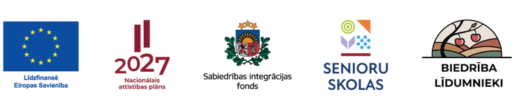

Digitālā pratība
Viedtālruņa un digitālo pakalpojumu izmantošana, drošība internetā un praktiskas digitālās prasmes ikdienai.
Bezmaksas mācību un tikšanās programma senioriem. Apgūstam ikdienā noderīgas prasmes, satiekam citus cilvēkus un aktīvi piedalāmies sabiedrības dzīvē.
Iepazīt programmu Dalība un norise
Biedrība “Līdumnieki” īsteno projektu “Senioru skola Tukuma novadā: Kurzemes reģiona senioru mūsdienu pratību, vieduma un sociālās līdzdalības veicināšana”, projekta Nr. 2026.LV/SenSk/043.
Senioru skola ir bezmaksas mācību un tikšanās programma senioriem, kurā praktiskā un senioriem piemērotā veidā iespējams apgūt ikdienā noderīgas zināšanas un prasmes, satikt citus cilvēkus un aktīvāk iesaistīties sabiedriskajā dzīvē.
Senioru skolas programma ietver četrus tematiskos virzienus. Nodarbībās būs praktiska darbošanās, uzdevumi, diskusijas un savstarpēja pieredzes apmaiņa.
Viedtālruņa un digitālo pakalpojumu izmantošana, drošība internetā un praktiskas digitālās prasmes ikdienai.
Zināšanas un praktiskas iemaņas veselības saglabāšanai, veselības informācijas izpratnei un aktīvai ikdienai.
Ikdienas finanšu plānošana, droši norēķini, finanšu pakalpojumu izmantošana un krāpniecības risku atpazīšana.
Iespējas iesaistīties kopienas dzīvē, aizstāvēt savas intereses, sadarboties un izmantot savu pieredzi sabiedrības labā.
Projektā aicināti piedalīties seniori vecumā no 65 gadiem, īpašu uzmanību pievēršot cilvēkiem, kuriem ikdienā ir mazāk iespēju piedalīties mācībās un sabiedriskajās aktivitātēs. Projekta laikā aktivitātēs plānots iesaistīt vismaz 100 unikālus seniorus.
Dalība nodarbībās ir bez maksas.
Projekta īstenošanas laiks: 2026. gada 1. septembris – 2027. gada 31. augusts.
Norises vieta: Tukuma novads.
Informācija par konkrētu nodarbību norises laiku, vietu, tēmām un pieteikšanos tiks regulāri publicēta biedrības “Līdumnieki” mājaslapā un sociālajos tīklos.
Senioru skolas nodarbības plānotas no 2026. gada 13. oktobra līdz 2027. gada 10. jūnijam.
Detalizēts nodarbību grafiks un norises vietas tiks publicētas pirms nodarbībām. Grafikā iespējamas izmaiņas.
Senioru skolas mērķis nav tikai piedāvāt atsevišķas lekcijas. Tā veidota kā praktiska mācību vide, kur seniori var iegūt ikdienā izmantojamas prasmes, stiprināt pārliecību par savām spējām, veidot jaunus sociālos kontaktus un turpināt aktīvi piedalīties sabiedrības dzīvē.
Projektu īsteno biedrība “Līdumnieki” Eiropas Savienības kohēzijas politikas programmas 2021.–2027. gadam 4.3.3.3. pasākuma “Atbalsts sociālajai uzņēmējdarbībai un sociālās ekonomikas attīstībai” atklāta projektu pieteikumu konkursa “Atbalsts senioru skolu pasākumu īstenošanai” ietvaros.
Projektu līdzfinansē Eiropas Savienība.
#ESfondi #EUFunds #EUinmyregion #InvestEU #SIF_SenioruSkolas